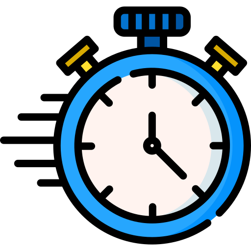

The same order was typed three times
A distributor in Bacolod City. Field agents visit sari-sari stores and take orders for noodles, sauces and sweets.

In the shop
A notebook and a phone calculator. The customer changes their mind — the whole column is added up again.
In the group chat
The order typed again into Messenger, standing in the street, numbered by hand.
At the warehouse
Read off the chat and typed a third time to be packed. Three chances for a number to change.
At the office
A spreadsheet of customers, one of products and prices, and the month's sales added up at the end of the month.
Each agent's day, week and target
No month-end tally. The numbers add themselves up from the orders as they are sent.

Day by day
Monday to Saturday: orders, shops and pesos for each day. Tap back to see last week.
Monthly quota
The office sets a target per agent. The agent sees a bar that fills, and how much is left to go.
The boss sees everyone
The same board for any agent, from Admin → Team. Only orders actually sent are counted.
If your business is a distributor or wholesaler
Agents on the road, a warehouse, an office, and orders arriving by chat.
Shop visit
Agent opens the store
Order on the phone
Total in front of the owner
Office confirms
One click, on the PC
Packed
Warehouse stamps it
Delivered + paid
Driver closes it
Today
- Orders in Messenger, retyped for the warehouse
- Agents quoting old prices
- Sales per agent counted at month end
- "Is my order coming?" calls
What I'd build
- Exactly SukiRun: order form, catalogue, groups
- Office dashboard and full status
- Quota per agent, day by day
- Works with no signal
Already proven
- 56 releases, in use by field agents
- 200+ products with pictures
- Android app + PC browser, one build
If your business is a store — sari-sari, hardware, pharmacy
One counter, a stockroom, customers on credit, and an owner who is not always there.
Customer picks
At the counter
Tap to sell
Total and change
Stock −1
By itself
On credit?
Into their page of the book
Owner sees it
Today’s sales, from home
Today
- A notebook of who owes what (utang)
- Stock checked by looking at the shelf
- Prices in the cashier's head
- The owner can't see today's sales from home
What I'd build
- A counter screen: tap to sell, total and change
- Stock that goes down with every sale, and a low-stock list
- A credit book per customer, with what they took
- Today's sales on the owner's phone
Carried over from Suki
- Product catalogue with pictures and groups
- Stock the office owns
- Cashier vs owner roles
- Day-by-day board, offline sync
If your business is food — a restaurant, bakery or home kitchen
Orders from a Facebook page and Messenger, a kitchen, and riders.
Message arrives
Page or Messenger
New
One list, nothing scrolled past
Cooking
Kitchen tablet
Ready
Customer told
Picked up + paid
Day’s sales add up
Today
- Orders scattered across chats and screenshots
- The kitchen works from a photo of a message
- Pickup times forgotten, an order missed
- Who has paid? Scroll up and check
What I'd build
- Every order in one list: New → Cooking → Ready → Picked up
- A kitchen screen on a tablet
- A reply to paste back to the customer
- Today's sales and best sellers
Carried over from Suki
- The order form and the copied summary
- Full status with who and when
- Menu as a catalogue with groups
- Cashier, kitchen and rider roles
If your business is a service — repair, laundry, aircon cleaning, salon
Jobs instead of products, technicians instead of agents.
Item comes in
Photo taken
Ticket
Who, what, when
Working
Assigned technician
Ready
Message the customer
Released + paid
Counted for the tech
Today
- Job slips on paper, lost or unreadable
- Customers calling "is it done yet?"
- Nobody knows which technician did how much
- Parts used are never counted
What I'd build
- A job ticket with a photo of the item as it came in
- Received → Working → Ready → Released, with a message to send the customer
- Each technician's jobs per day and a monthly target
- Parts taken off stock as they are used
Carried over from Suki
- The status ladder and its timeline
- Per-person week board and quota
- Photos that work offline
- Accounts and roles
If your business is delivery — water refilling, LPG, rice
Regular customers, riders on motorbikes, and containers that have to come back.
Customer texts
Or calls, or walks in
Order in the list
Their usual, one tap
Rider’s run
In order, on his phone
Delivered
Empties collected
Paid or on account
Cash counted per rider
Today
- Orders taken on a notebook by the phone
- Nobody knows which customer still has 4 gallons
- Regulars forgotten when they stop ordering
- Rider cash counted from memory at night
What I'd build
- Each regular’s usual order, repeated in one tap
- Containers out, per customer
- The rider’s run list for the day
- Cash handed in per rider, per day
Carried over from Suki
- The store book and "what they bought last time"
- "Gone quiet" alerts for regulars
- Delivery role and status
- Works where the rider has no signal
If your business is a clinic — dental, vet or medical
Bookings and walk-ins, a queue at the front desk, and patients who should come back.
Book
By phone or at the desk
Waiting
Today’s queue on a tablet
Seen
Notes and photos
Billed
Paid, or balance kept
Due back
Reminder list
Today
- Appointments in a notebook, walk-ins on top
- History on paper cards that go missing
- Follow-ups depend on someone remembering
- The day’s income added up at closing
What I'd build
- A booking calendar and today’s queue
- A patient card with history and photos
- Bill, payments and balance per visit
- A list of who is due back this week
Carried over from Suki
- A customer book with full history
- Status: booked → waiting → seen → paid
- Front desk vs doctor roles, enforced by the database
- Photos that work offline
If your business is construction — a contractor or builder
Several sites at once, materials to order, and workers to pay every Saturday.
Site opens
One page per project
Materials asked
By the foreman
Delivered to site
Receipt photographed
Attendance
Taken on site, offline
Payroll + billing
Adds itself up weekly
Today
- Material requests sent by text
- Receipts kept in a plastic bag
- Attendance on paper, per site
- Payroll rebuilt in Excel every Saturday
What I'd build
- Material requests per site, with a status
- A photo of every receipt, filed to its site
- Daily attendance from the foreman’s phone
- Payroll and cost per site, ready on Saturday
Carried over from Suki
- Offline-first — sites rarely have signal
- Status with who and when
- Per-person week board
- Photos stored on the phone until they can upload
If your business is rentals — cars, equipment, event supplies
The same item cannot be in two places, and it has to come back in one piece.
Inquiry
Is it free on the 14th?
Reserved
Deposit taken
Out
Photos at hand-over
Returned
Checked against the photos
Paid
Balance settled
Today
- Double bookings, found out on the day
- "Is it available?" answered from memory
- Damage arguments with no photos
- Deposits tracked on paper
What I'd build
- A calendar of what is out, and when
- It refuses to book what is already out
- Hand-over and return photos
- Deposit and balance per booking
Carried over from Suki
- Catalogue with pictures and groups
- The full status timeline
- Photos that work offline
- Staff vs owner roles